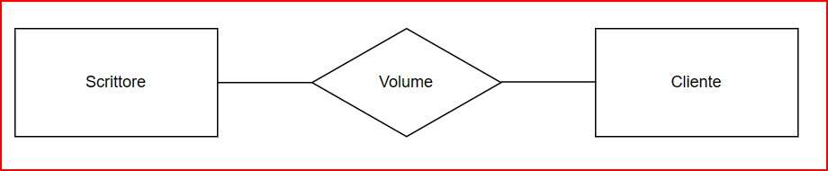
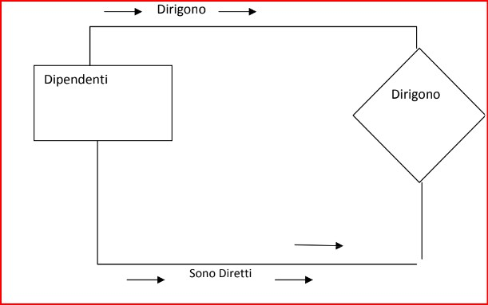
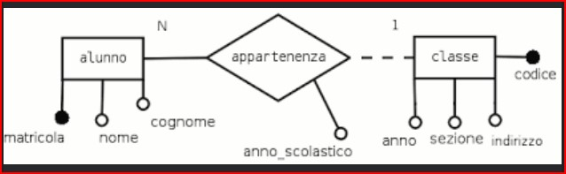
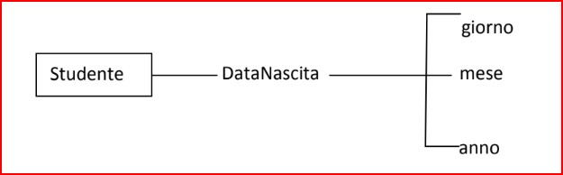
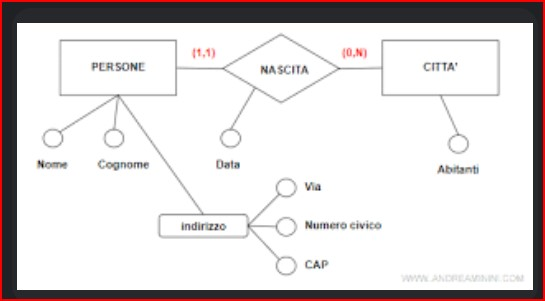
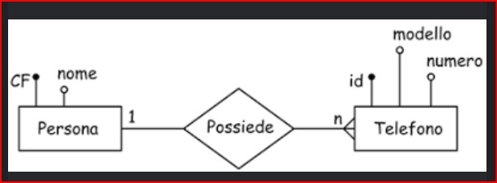
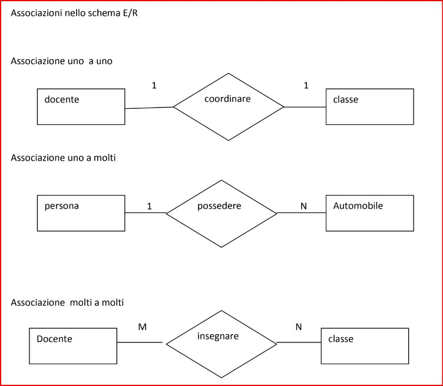
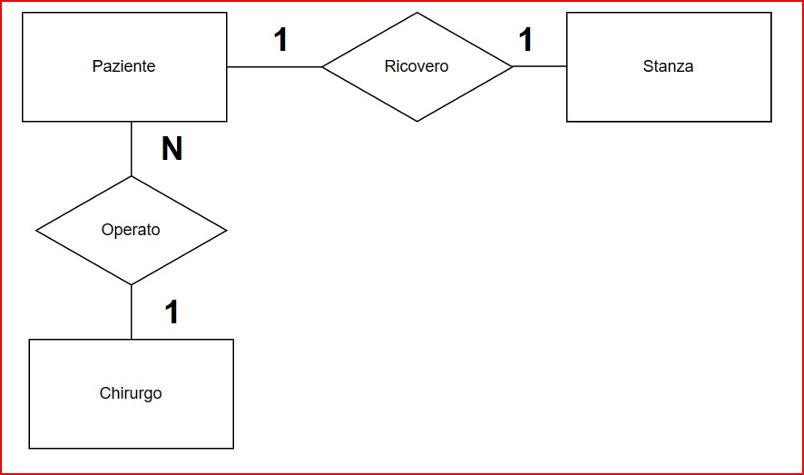
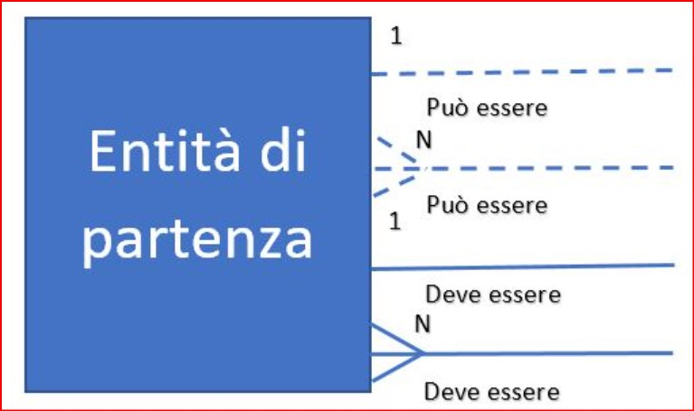

Entita' Associazioni
-Un'entità è una categoria di oggetti (eventi, individui, oggetti) con caratteristiche in comune. Ad esempio, in un sistema di gestione di una libreria, le categorie potrebbero includere "Volume", "Scrittore" e "Cliente". Un'associazione rappresenta il legame tra due o più categorie e illustra come le categorie sono connesse o interagiscono tra di loro. Nello schema ER, le categorie sono rappresentate da un rettangolo con il nome della categoria al suo interno. Le associazioni sono simboleggiate tramite linee che collegano le categorie coinvolte.
Associazione Ricorsiva
Una Associazione ricorsiva è un' entità collegata a se stessa attraverso un associazione. Questo significa che ogni istanza si può collegare ad altre istanze della propria entità.
Entita' Realta'
Entità e associazioni nelle realtà possono variare a seconda della situazione in cui ci troviamo. Esempi di entità e associazioni
Attributi Entita'
Ogni entità pio avere diversi Attributi, ad esepio la data di nasciata a come Attributi giorni, mese e anno
Attributi Entita' Realta
Come esempio reale possiamo vedere come una persone ha come attributi nome cognome e indirizzo, indirizzo a sua volta ha tre attributi via, numero civico, cap. Nascita invece ha come attributo Data. Città come attributi Abitanti
Molteplicita' di una Associazione
La molteplicità nelle associzione viene rappresenta o con dei numeri come " 1 " oppure lettere "N" ma ci sono casi che si possono usare numeri e lettere insieme.
Associazioni Diverse
Le associazioni possono essere di tipo diverso
Schema E/R
Come esempio: I pazienti di un reparto di chirurgia sono ricoverati in stanze singole con differenti dotazioni (telefono. televisore, aria condizionata). I pazienti vengono operati da un chirurgo. Si devono registrare anche data. ora e sala operatoria nella quale il paziente è operato. Bisogna inoltre tenere conto delle date di inizio e fine del ricovero Per semplicità si ipotizzi che un paziente possa essere ricoverato una sola volta nel periodo di tempo consi-derato, che durante il ricovero non cambi la stanza e che ogni stanza sia riservata a un solo paziente.
Lettura Del Modello
Per la lettura del modello Per entrambi i versi di una relazione deve essere sempre possibile ricavare due frasi devono essere composte ciascuna da 6 elementi si inizia con la parola OGNI si indica il nome dell'entità di partenza si indica l'obbligatorietà con il verbo DEVE (linea continua) o il verbo PUO' se è facoltativo (linea tratteggiata) si riporta il verbo della relazione si indica la cardinalità con 1 solo se è collegamento 1:1 oppure uno o più se è di tipo 1:N per ultimo si indica il nome della entità di destinazione
